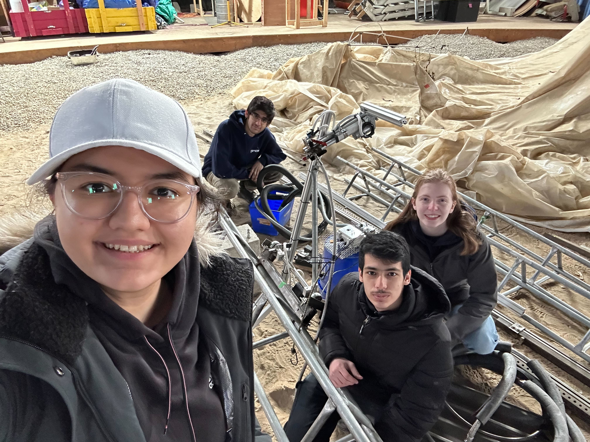

Before we dive into the engineering design work I've done this
school year, I would first like to comment on my position as an engineering design student
and how that shapes the way I approach design problems. I believe that Engineering Design
is an iterative process that involves working with stakeholders to
frame the opportunity. This involves creating a
requirements model with approprite objectives, metrics, criteria, and constraints. This also
requires you to diverge to find various solutions to the
proposed design opportunity and also converge to
limit the number of design candidates. The diverging and converging process should go on in
cycles, and may also include framing if the current set of requirements are not specific enough
to properly assess all the design candidates. Finally, throughout this entire engineering design
process you should represent your ideas through tables,
prototypes, graphs, and any other possible means.

An important value that I hold as an engineering design student is pursuing challenges that
allow me to learn new skills and tools. I really enjoy building and designing things with
tools that I had no idea how to use previous, this could be machinery or even new software.
This is exemplified throughout my engineering design work as I am always looking for new
tools that could be used to help open up the design opportunity. I believe that doing this
is the best way to become more comfortable with these new tools and allows me to be a more
flexible engineering designer. Another value I hold is efficiency in a design. I've defined
efficiency as how long it takes for the design to properly perform and finish its function.
This is evident through my design work because even when I have a fully functioning product,
I continue to work on the design to make it more efficient by looking at certain design
decisions I have made and looking to see if there are better ways to implement them.
One major bias I have in my design work is looking for solutions that are too complicated.
This hurts me a lot when I try to implement the design. The reason I have this bias is
because now that I am in university, I have the feeling that I can now become the engineer
that I have always dreamed I would be. In reality, I'll never be able to build whatever I
want and exactly how I want it, unlike the engineer I thought I could be in my dreams. The
truth is simply that engineering is all about compromise and that no matter how good of an
idea you have, you must be ready to compromise with the real world. Many of my engineering
design projects start out as these massive ideas, but then have to get scaled down due to
various constraints, which is something I need to learn to overcome so that I can become
a more practical engineering designer.
One of my strongest skills is my perserverence. When I start a design project I stick with it
until I am at least able to have some sort of final product. However, this can also be one
of my biggest weaknesses becasue I can waste a lot of time on an opportunity that I may not
have the proper tools to address. Another one of my skills is that I like to think outside of
the box and pitch design ideas that seem out of scope. I like to do this because it hepls question
the design space and even if the particular design I am pitching does not get accepted, it could
still be used to help build on something better.